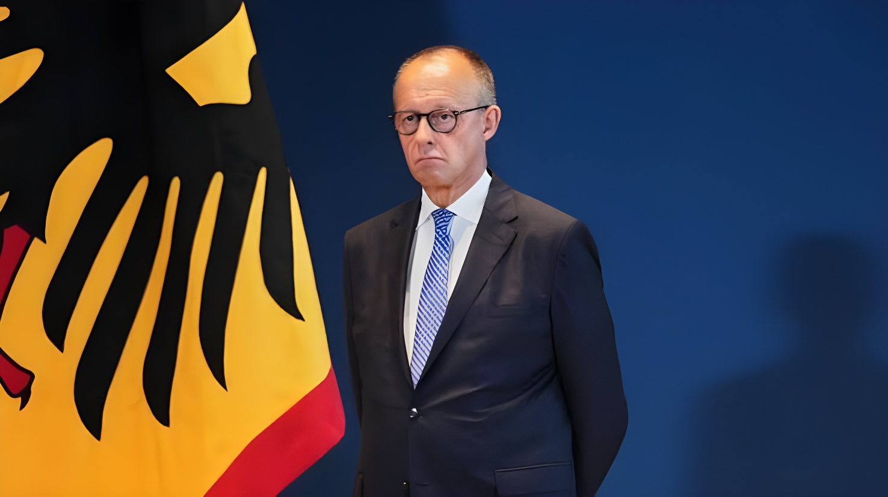

Mardi 15 septembre 2026, le chancelier Friedrich Merz a annulé son déplacement prévu la semaine prochaine à New York pour l'Assemblée générale des Nations unies, où il devait recevoir le prix Henry Kissinger et prendre la parole à la tribune. En cause : la déroute électorale de la CDU en Saxe-Anhalt début septembre, une contestation croissante dans son propre camp, plusieurs appels à sa démission, et deux scrutins régionaux décisifs prévus le 20 septembre, à Berlin et en Mecklembourg-Poméranie-Occidentale.
C'est un communiqué de la chancellerie, envoyé par courriel mardi, qui a mis fin au suspense : contrairement au programme initial, Friedrich Merz ne se rendra pas à New York la semaine prochaine, sa présence étant jugée nécessaire à Berlin. Le chancelier devait pourtant y recevoir mardi prochain le prix Henry Kissinger, décerné par l'Académie américaine de Berlin, et prendre la parole devant l'Assemblée générale des Nations unies lors de la semaine de haut niveau.
À la place, M. Merz participera lundi à une réunion de la direction de la CDU, puis mardi à une réunion du groupe parlementaire CDU/CSU au Bundestag, où il devrait essuyer la colère d'une partie de ses propres députés. C'est le ministre des Affaires étrangères, Johann Wadephul, qui devrait le représenter à New York, comme l'an dernier déjà, lorsque Merz avait renoncé au même déplacement en raison de tensions internes à sa coalition.
L'AfD manque de trois sièges seulement la majorité absolue, son meilleur résultat de l'histoire dans un Land, tandis que la CDU, qui gouvernait la région depuis 2002, s'effondre.
Plusieurs cadres conservateurs réclament publiquement la démission de Friedrich Merz, fragilisant son autorité sur le parti.
Une réunion extraordinaire de la CDU est convoquée pour arrêter une ligne commune, le jour même de deux nouveaux scrutins régionaux.
Élections au Parlement régional de Berlin (Abgeordnetenhaus) et en Mecklembourg-Poméranie-Occidentale, deux nouveaux tests pour la CDU.
La confiance envers Friedrich Merz s'est également érodée au sein de son propre camp : selon un sondage publié le week-end dernier, une majorité des sympathisants de la CDU ne croient plus qu'il soit l'homme de la situation, un jugement partagé par 78 % de la population dans son ensemble, un niveau de défiance inédit pour un chancelier. Merz a néanmoins écarté toute idée de démission après la défaite de Saxe-Anhalt, reconnaissant que le résultat l'avait « déstabilisé », tout en affirmant sa détermination à aller au bout de son mandat de quatre ans.
Le scrutin du 20 septembre en Mecklembourg-Poméranie-Occidentale s'annonce particulièrement périlleux : les enquêtes d'opinion y créditent la CDU d'environ 7 % des intentions de vote, ce qui constituerait son plus mauvais résultat dans un Land depuis la fondation de la République fédérale, loin derrière l'AfD (36-38 %) et la SPD de la ministre-présidente sortante Manuela Schwesig (32-34 %).
| Acteur | Position |
|---|---|
| Friedrich Merz (CDU) | Chancelier fédéral, sous pression après la Saxe-Anhalt |
| Manuela Schwesig (SPD) | Ministre-présidente sortante de Mecklembourg-Poméranie-Occidentale |
| Kai Wegner (CDU) | Maire sortant de Berlin, ne se représente pas |
| Stefan Evers (CDU) | Tête de liste CDU pour la mairie de Berlin |
« Sa présence est requise à Berlin la semaine prochaine. »
— Communiqué de la chancellerie fédérale, 15 septembre 2026Au-delà de l'agenda diplomatique, c'est la stratégie même de la CDU qui est en cause : après la déroute de Saxe-Anhalt, le parti craint un nouvel effondrement dans deux Länder supplémentaires le même dimanche, ce qui accentuerait encore la pression sur la direction de Friedrich Merz à moins d'un an de la moitié de son mandat.
En renonçant pour la deuxième année consécutive à représenter l'Allemagne à la tribune des Nations unies, Friedrich Merz illustre à quel point la survie politique de son propre camp dicte désormais l'agenda du chancelier, au détriment de la représentation internationale du pays. Les deux scrutins du 20 septembre, à Berlin et en Mecklembourg-Poméranie-Occidentale, s'annoncent désormais comme le véritable test de sa capacité à tenir jusqu'au bout de son mandat.
Am Dienstag, den 15. September 2026, sagte Bundeskanzler Friedrich Merz seine für die kommende Woche geplante Reise zur UN-Generalversammlung in New York ab, wo er den Henry-Kissinger-Preis entgegennehmen und vor der Vollversammlung sprechen sollte. Grund sind die Wahlschlappe der CDU in Sachsen-Anhalt Anfang September, wachsender Widerstand im eigenen Lager, mehrere Rücktrittsforderungen sowie zwei entscheidende Landtagswahlen am 20. September in Berlin und Mecklenburg-Vorpommern.
Ein am Dienstag per E-Mail verschicktes Statement des Kanzleramts beendete die Spekulationen: Entgegen der ursprünglichen Planung werde Friedrich Merz kommende Woche nicht nach New York reisen, da seine Anwesenheit in Berlin erforderlich sei. Dabei sollte der Kanzler dort am kommenden Dienstag den von der American Academy in Berlin verliehenen Henry-Kissinger-Preis entgegennehmen und in der Woche der hochrangigen Debatten vor der UN-Generalversammlung sprechen.
Stattdessen nimmt Merz am Montag an einer Sitzung der CDU-Führung und am Dienstag an einer Sitzung der Unionsfraktion im Bundestag teil, wo ihm Unmut aus den eigenen Reihen droht. Vertreten werden dürfte Deutschland bei der UN-Generalversammlung stattdessen von Außenminister Johann Wadephul – wie bereits im Vorjahr, als Merz denselben Termin wegen koalitionsinterner Spannungen ausfallen ließ.
Der AfD fehlen nur drei Sitze zur absoluten Mehrheit – ihr bestes Ergebnis in einem Bundesland überhaupt –, während die CDU, die die Region seit 2002 regiert, einbricht.
Mehrere führende Unionspolitiker fordern öffentlich den Rücktritt von Friedrich Merz und schwächen damit seine Autorität in der Partei.
Eine CDU-Sondersitzung soll eine gemeinsame Linie festlegen – ausgerechnet am Tag zweier weiterer Landtagswahlen.
Wahlen zum Berliner Abgeordnetenhaus und zum Landtag in Mecklenburg-Vorpommern, zwei weitere Stimmungstests für die CDU.
Auch im eigenen Lager schwindet das Vertrauen in Friedrich Merz: Einer am vergangenen Wochenende veröffentlichten Umfrage zufolge glaubt eine Mehrheit der CDU-Anhänger nicht mehr, dass er der richtige Mann im Amt ist – eine Einschätzung, die 78 Prozent der Gesamtbevölkerung teilen, ein Rekordtief für einen amtierenden Kanzler. Merz schloss nach der Niederlage in Sachsen-Anhalt dennoch jeden Rücktrittsgedanken aus, räumte ein, das Ergebnis habe ihn „verunsichert", betonte aber seine Entschlossenheit, seine vierjährige Amtszeit zu Ende zu führen.
Besonders heikel dürfte die Wahl am 20. September in Mecklenburg-Vorpommern werden: Umfragen sehen die CDU dort bei nur rund 7 Prozent – ihr schlechtestes Landesergebnis seit Gründung der Bundesrepublik –, weit hinter der AfD (36-38 Prozent) und der SPD der amtierenden Ministerpräsidentin Manuela Schwesig (32-34 Prozent).
| Akteur | Position |
|---|---|
| Friedrich Merz (CDU) | Bundeskanzler, unter Druck nach Sachsen-Anhalt |
| Manuela Schwesig (SPD) | Amtierende Ministerpräsidentin von Mecklenburg-Vorpommern |
| Kai Wegner (CDU) | Amtierender Regierender Bürgermeister von Berlin, tritt nicht mehr an |
| Stefan Evers (CDU) | Spitzenkandidat der CDU für das Bürgermeisteramt in Berlin |
„Seine Anwesenheit ist kommende Woche in Berlin erforderlich."
— Mitteilung des Bundeskanzleramts, 15. September 2026Über den diplomatischen Terminkalender hinaus steht die Strategie der CDU insgesamt zur Debatte: Nach der Schlappe in Sachsen-Anhalt fürchtet die Partei einen weiteren Einbruch in zwei zusätzlichen Bundesländern am selben Sonntag, was den Druck auf die Führung von Friedrich Merz noch vor der Halbzeit seiner Amtszeit weiter erhöhen würde.
Indem er zum zweiten Mal in Folge darauf verzichtet, Deutschland vor der UN-Vollversammlung zu vertreten, macht Friedrich Merz deutlich, wie sehr das politische Überleben seines eigenen Lagers inzwischen die Agenda des Kanzlers bestimmt – zulasten der internationalen Repräsentation des Landes. Die beiden Wahlen am 20. September, in Berlin und in Mecklenburg-Vorpommern, gelten nun als eigentlicher Test dafür, ob er seine Amtszeit bis zum Ende durchstehen kann.